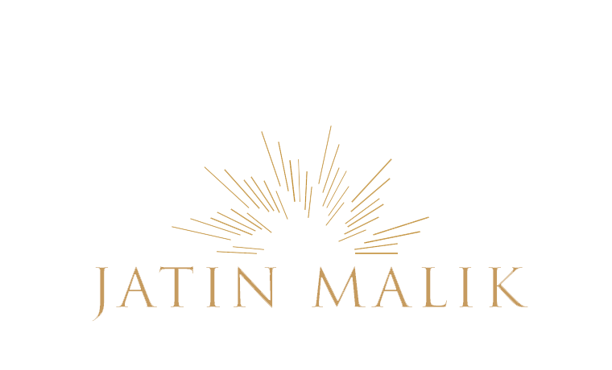
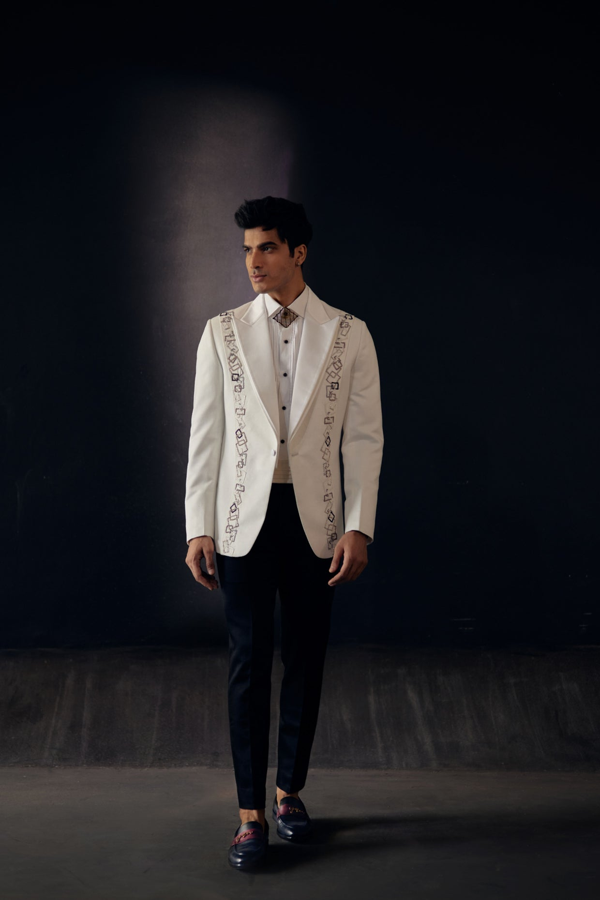
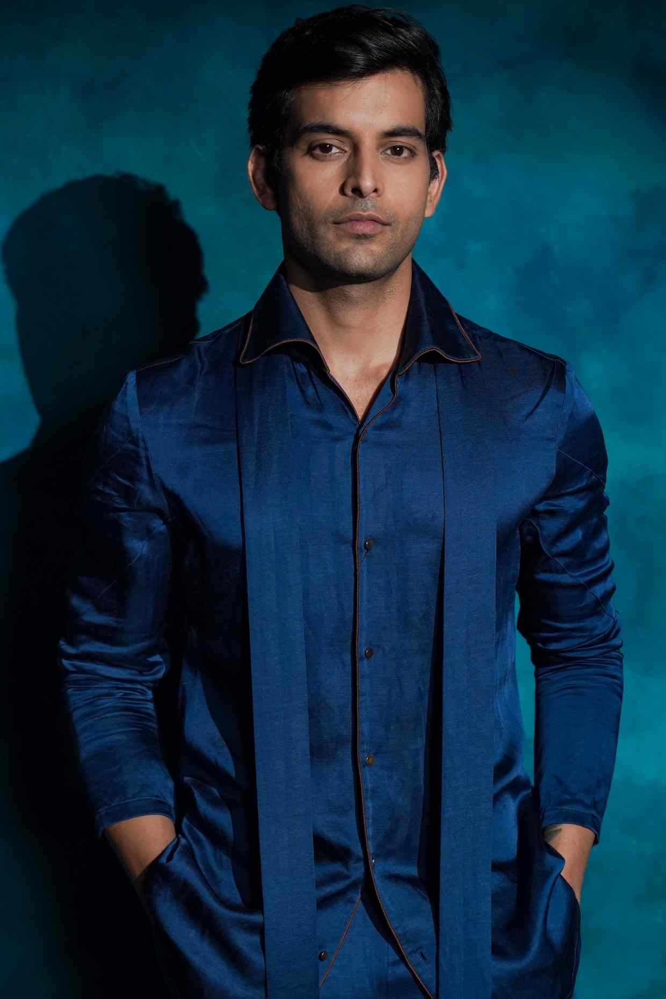
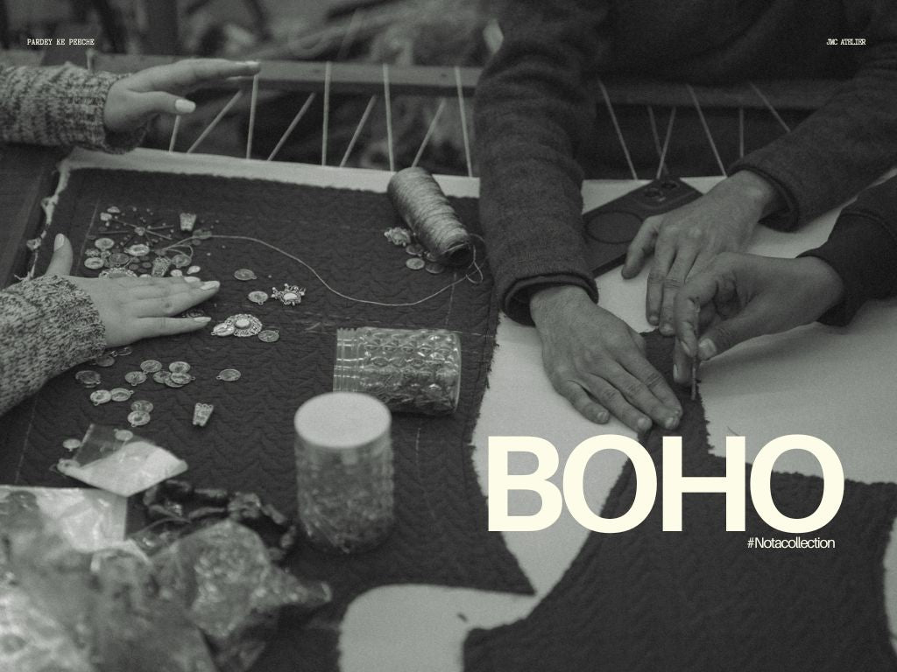

Landing Page · Final Image Set
The dark, essential nine
Curated from all 65 assets for one goal: a single landing page that makes the brand identity unmistakable. Dark, cinematic, teal+gold, craft-led. Each tagged with its proposed role.
01 · Hero (motion)

↑ Draped teal silk loop + gold logo + “Where the story begins”. Abstract, luxe, sets mood before product.
Signature looks — the identity



Colour, echo & essence


